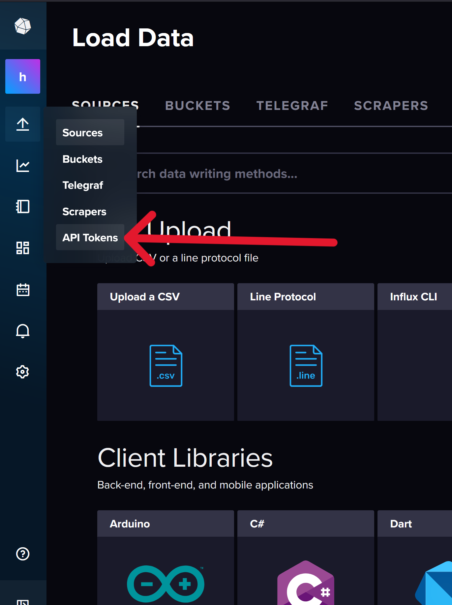
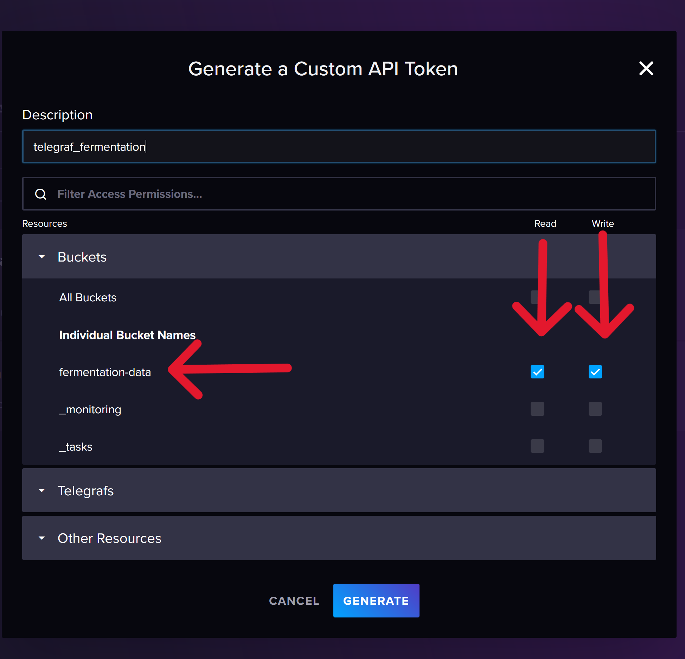
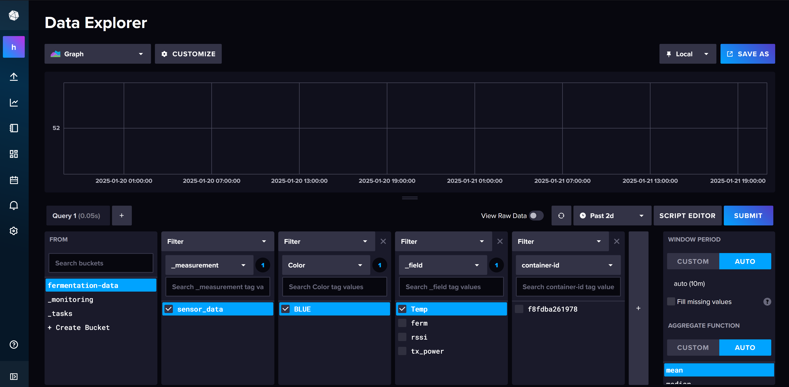
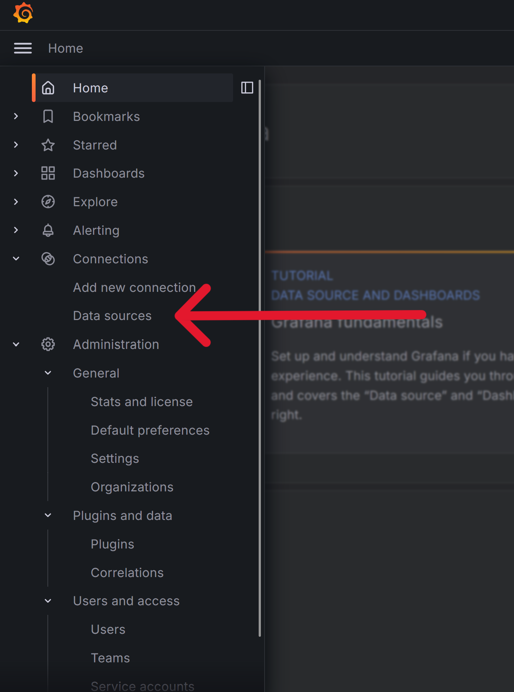
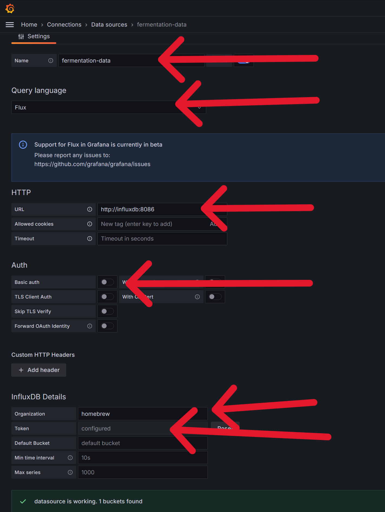
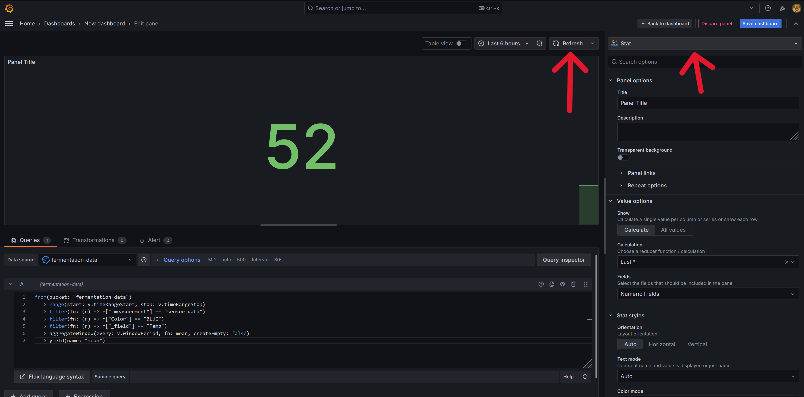
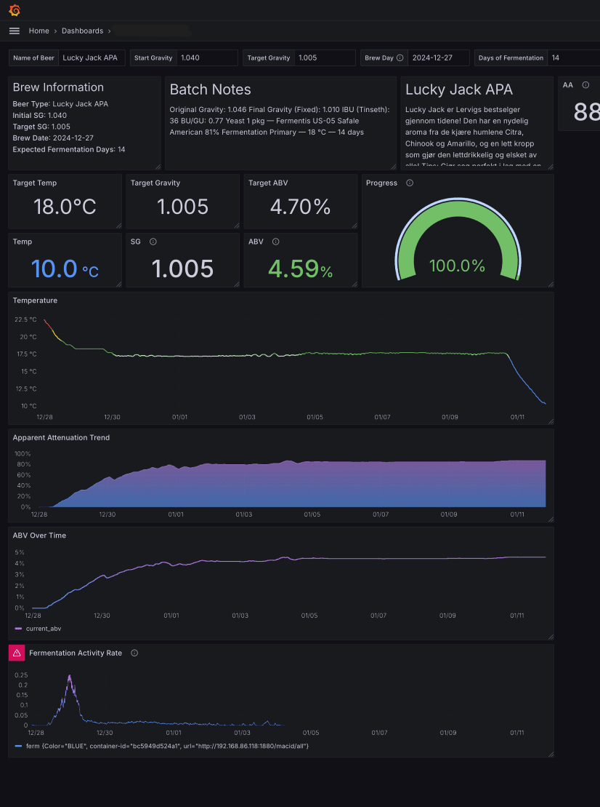
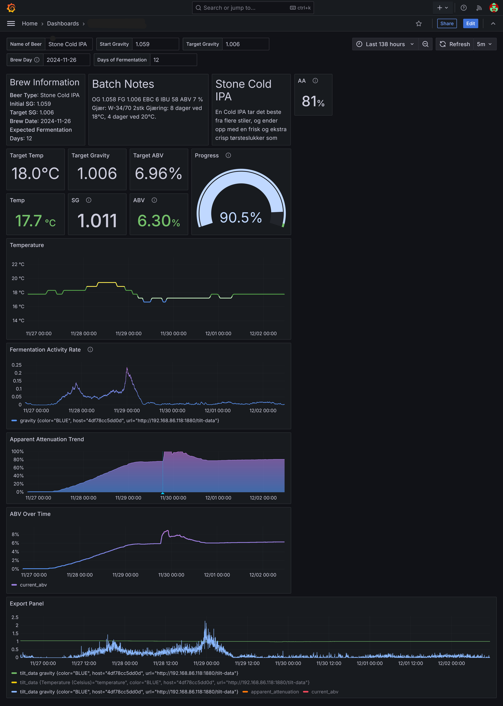

This guide will walk you step-by-step through setting up a monitoring stack with Docker to extract data from a Tilt Hydrometer and display it in Grafana. Together, we'll replicate the functionality of the Tilt Pi UI, including tracking gravity, temperature, and basic metrics. You'll also have room to expand into advanced Grafana features like ABV over time, apparent attenuation, and fermentation rate.
To get started, you need to have a Tilt Pi installed on a Raspberry Pi with an active connection to your Tilt Hydrometer. If you haven’t set this up yet, you can follow one of the official guides:
Once you've completed the installation, you’ll have a working Tilt Pi ready to connect with your Tilt Hydrometer.
To build our monitoring stack, we’ll use Docker containers. If you're new to Docker, it's a tool for running applications in lightweight, isolated environments called containers. You can learn more about it from Docker's official documentation.
We'll use a script to install Docker and Docker Compose. Open your terminal and run:
curl -sSL https://get.docker.com | sh
This command will download and install Docker on your system. (I'd recommend looking over any script before you run it on your machine, this one is a handy one)
sudoTo avoid typing sudo every time you use Docker, add your user (who must have root privileges) to the Docker group:
sudo usermod -aG docker $USER
After running this command, log out and then log back in for the changes to take effect.
You can verify that Docker is installed and running correctly by executing:
docker run hello-world
This will download and run a test container, printing a message to confirm that Docker is working.
To ensure all our containers can communicate with each other, we need to place them on the same Docker network.
Run the following command to create a network called tilt-pi-network:
docker network create tilt-pi-network
To organize our Docker environment, we'll create a folder specifically for Docker and, within it, a database directory for InfluxDB and Telegraf. In this case my user's name is pi, but yours might be something different so change this accordingly:
mkdir -p /home/pi/docker/database
InfluxDB is a time-series database optimized for metrics and events, making it perfect for storing and analyzing fermentation data. Telegraf is a data collection agent that gathers metrics and forwards them to InfluxDB.
We'll now create a docker-compose.yml file to define our database stack. This file will configure two services: InfluxDB and Telegraf.
Navigate to the database folder you have just made
cd /home/pi/docker/database
Use nano or your preferred text editor to create the docker-compose.yml file:
nano docker-compose.yml
Here is the docker-compose.yml file for our database stack:
```yaml services: influxdb: image: influxdb:2 container_name: influxdb restart: unless-stopped environment: DOCKER_INFLUXDB_INIT_MODE: setup DOCKER_INFLUXDB_INIT_USERNAME: ${INFLUXDB_ADMIN_USERNAME} DOCKER_INFLUXDB_INIT_PASSWORD: ${INFLUXDB_ADMIN_PASSWORD} DOCKER_INFLUXDB_INIT_ADMIN_TOKEN: ${INFLUXDB_ADMIN_TOKEN} DOCKER_INFLUXDB_INIT_ORG: ${INFLUXDB_ORG} DOCKER_INFLUXDB_INIT_BUCKET: ${INFLUXDB_BUCKET} ports: - "8086:8086" volumes: - /home/pi/docker/database/data:/var/lib/influxdb2 - /home/pi/docker/database/config:/etc/influxdb2 networks: - tilt-pi-network
telegraf_tilt-pi-scraper: image: telegraf:latest container_name: telegraf_tilt-pi-scraper restart: unless-stopped environment: - INFLUX_TOKEN=${INFLUX_TOKEN} - INFLUX_ORG=${INFLUXDB_ORG} - INFLUX_BUCKET=${INFLUXDB_BUCKET} - INFLUX_URL=http://influxdb:8086 volumes: - /home/pi/docker/database/tilt-pi-scraper_telegraf.conf:/etc/telegraf/telegraf.conf:ro networks: - tilt-pi-network
networks: tilt-pi-network: external: true ```
Now hit Ctrl+S to save, then Ctrl+X to exit.
.env FileTo securely store sensitive credentials and allow for easier configuration, create a .env file in the same directory as the docker-compose.yml file (the database folder). Add the following content:
nano .env
```
INFLUXDB_ADMIN_USERNAME=your_admin_username INFLUXDB_ADMIN_PASSWORD=your_admin_password INFLUXDB_ADMIN_TOKEN=your_admin_token
INFLUXDB_ORG=homebrew INFLUXDB_BUCKET=fermentation-data
INFLUX_TOKEN=you-will-generate-this-later-in-influxDB-dashboard ```
Replace your_admin_username, your_admin_password, and your_admin_token with values of your choice. Keep the influxDB values as they are unless you know what you are doing. You will need to generate an API token later and update the INFLUX_TOKEN field.
Now that we have defined our docker-compose.yml file, we’ll start the InfluxDB service.
Run the following command from the directory containing your docker-compose.yml file:
docker compose up -d influxdb
This command starts only the influxdb service. It will download the required image if it’s not already on your system and initialize InfluxDB using the credentials and settings specified in the .env file.
Now we will quickly check if our databse is running before setting up Telegraf
Once the command completes, open your browser and navigate to:
http://<your-raspberry-pi-ip>:8086
You should see the InfluxDB web UI ogin page. Log in using the credentials you defined in the .env file.
INFLUXDB_ADMIN_USERNAME=your_admin_username
INFLUXDB_ADMIN_PASSWORD=your_admin_password
If you do not see a dashboard, check your ip is correct and use
docker logs influxdb
To check the logs of the container. You should be able to work out what is misconfigured from there.
Now that we’ve logged into InfluxDB and see the dashboard, we’ll create the API token Telegraf needs to write data to the database.
On the left-hand side menu, hover over the upward pointing arrow (Load data), go to API Tokens. This is where we’ll generate a custom token to allow Telegraf to write data to our database and for Grafana to read that data.

telegraf_fermentation.fermentation-data bucket using the checkboxesClick Generate to generate the token.

A window will pop up with your newly created API token. You will only be able to see this once, so copy it and paste it somewhere for use later.
Note: There is a known bug where the copy button does not work properly, so highlight the token and copy it.
.env Filewith your copied API token, update your .env file with the following line:
nano .env
and update the INfLUX_TOKEN value
INFLUX_TOKEN=your-newly-generated-token-here
save and exit
Now that we’ve set up InfluxDB and generated our API token, the next step is to configure Telegraf to scrape data from the Tilt Pi and send it to InfluxDB.
Navigate to the directory where your docker-compose.yml file is stored:
cd /home/pi/docker/database
Use nano or your preferred text editor to create the Telegraf configuration file:
nano tilt-pi-scraper_telegraf.conf
Copy and paste the following into the tilt-pi-scraper_telegraf.conf file:
<your-raspberry-pi-ip> with the IP address of your Raspberry Pi at the top keeping the :1880/macid/all after your ip.```
[[inputs.http]]
data_format = "json_v2"
name_override = "sensor_data"
urls = ["http://
[[inputs.http.json_v2]] measurement_name = "sensor_data"
[[inputs.http.json_v2.object]] path = "0" # Targets the first element in the array
# Tags
[[inputs.http.json_v2.object.tag]]
path = "Color"
# Fields
[[inputs.http.json_v2.object.field]]
path = "tx_power"
type = "int"
[[inputs.http.json_v2.object.field]]
path = "rssi"
type = "int"
[[inputs.http.json_v2.object.field]]
path = "Temp"
type = "float"
[[inputs.http.json_v2.object.field]]
path = "ferm"
type = "float"
[[outputs.influxdb_v2]] urls = ["${INFLUX_URL}"] token = "${INFLUX_TOKEN}" organization = "${INFLUX_ORG}" bucket = "${INFLUX_BUCKET}"
[[processors.rename]]
[[processors.rename.replace]] tag = "host" dest = "container-id" ```
Save and exit the file.
interval parameter defines how often Telegraf scrapes data from the Tilt Pi. In this example, it's set to 10s the default. 30s or 1m) may help reduce writes and storage usage. If you change this value due to hardware constraints, you may want to consider changing the response_timeout value as well.With the configuration in place, we are ready to start sending data to influxDB:
docker compose up -d
Now that the Telegraf service is running, we’ll confirm that data from the Tilt Pi is being received by our InfluxDB database.
In your browser, navigate to your InfluxDB instance:
http://<your-raspberry-pi-ip>:8086
Once logged in:
fermentation-data bucket.sensor_data measurement.sensor_data you should see Color. Select your Tilt ColorIf you see the expected data, your setup is working correctly, and InfluxDB is receiving information from Telegraf.

docker logs telegraf_tilt-pi-scrapertilt-pi-scraper_telegraf.conf file for typos, especially the urls field.## Setting Up the Grafana Visualization Container
Now we will set up our data visualization. We will create a Grafana container using Docker Compose.
Navigate to your Docker directory and create a folder for Grafana:
cd /home/pi/docker
mkdir grafana
cd grafana
Create a new docker-compose.yml file for Grafana:
nano docker-compose.yml
Paste the following content into the file, ensuring the paths align with your pi username:
``` services: grafana: image: grafana/grafana:latest container_name: grafana restart: unless-stopped user: '0' ports: - '3000:3000' volumes: - '/home/pi/docker/grafana/data:/var/lib/grafana' networks: - tilt-pi-network
networks: tilt-pi-network: external: true ```
Save and exit the file.
Run the following command to start the Grafana container:
docker compose up -d
This will create and start the Grafana service.
Open your browser and open a new tab to:
http://<your-raspberry-pi-ip>:3000
You should see the Grafana login screen. Use the default credentials to log in:
Grafana will prompt you to change the default password after your first login. Choose a secure password and proceed. You should be greeted by the dashboard.
Now that Grafana is running, we need to connect it to our InfluxDB database to start visualizing data.
On the left-hand side of the Grafana dashboard, in the "burger" menu look for the Connections tab. Click on Data Sources.

Next, click Add Data Source and select InfluxDB. - If InfluxDB does not appear as a suggestion, use the search bar to find it.
In the Data Source settings, configure the following fields:
fermentation-data.Flux.http://influxdb:8086.homebrew (or the organization name you used in your .env file).Click Save & Test.
If everything is set up correctly, you should see a green box that says:
Datasource is working. 1 bucket found.
This confirms that Grafana is now connected to your InfluxDB database.

Now for the fun part! We can finally visualize the data coming from our Tilt Hydrometer in Grafana.
fermentation-data).We are now in a panel editor. By default, the visualization type at the top right is set to "Time Series". We can change it to "Stat" for a cleaner display of individual metrics like temperature or specific gravity (SG).
Open a new tab and go to the InfluxDB dashboard and into the Data Explorer tab
InfluxDB Data Explorer provides a Query Builder tool that can help generate the correct Flux query for your specific setup. Use this to create your query with all the right values. Then select the script editor, and finally copy and paste it into Grafana.
from(bucket: "fermentation-data")
|> range(start: v.timeRangeStart, stop: v.timeRangeStop)
|> filter(fn: (r) => r["_measurement"] == "sensor_data")
|> filter(fn: (r) => r["Color"] == "BLUE")
|> filter(fn: (r) => r["_field"] == "Temp")
|> aggregateWindow(every: v.windowPeriod, fn: mean, createEmpty: false)
|> yield(name: "mean")

Once the query is pasted into the grafana, you can hit refresh to see if your query has worked, and then hit back to dashboard.
Repeat this process to add visualizations for SG (specific gravity), RSSI (signal strength), or any other data points provided by the Tilt Hydrometer. With a few additions, you’ll have a simple dashboard that replicates much of the functionality of the Tilt Pi UI, with room for expansion into more complex data analysis and visualization.
Here’s an example of my current dashboard. Note that when we added dry hops to the Stone Cold IPA, it temporarily disturbed the SG reading, but it eventually settled out.


Using this pipeline and Grafana for visualization, you can:
This information allows you to make better decisions and ultimately brew better beer. Enjoy your newfound brewing insights!
This guide covers the basics of getting information into Grafana and visualizing it. The goal of this guide was to keep things as simple as possible.
The provided configuration in tilt-pi-scraper_telegraf.conf uses the Color attribute as a tag to differentiate data. If you have multiple Tilt Hydrometers and would like to uniquely identify them, you can modify the configuration to use the uuid as the identifier instead of the Color tag or alongside the tag. This ensures that each hydrometer's data is distinctly tracked, even if they share the same Color attribute.